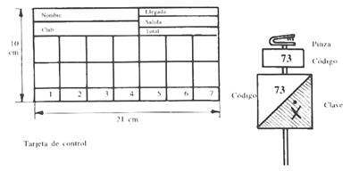

| Qué es el deporte de orientación | ||||
| La carrera de orientación es una carrera individual, contra reloj, en terreno desconocido, en la que el deportista tiene que pasar por una serie de puntos llamados controles, los cuales están señalados con exactitud en su mapa, y situados en el terreno mediante una baliza. El deportista completará el recorrido más o menos rápidamente dependiendo de su habilidad para interpretar el mapa (junto con el apoyo de la brújula) y su nivel de condición física. | ||||
| Un deporte lleno de valores | ||||
La orientación es un verdadero deporte popular. Pueden practicarlo desde el deportista que persigue ganar un Campeonato del Mundo hasta la familia que simplemente desea pasar un día agradable en el campo.
|
||||
| Un poco de historia | ||||
| La orientación como deporte surge en Suecia a finales del siglo XIX, con los primeros mapas topográficos modernos. Poco a poco las competiciones se hacen más populares. Por iniciativa de los deportistas escandinavos nace en 1961 la Federación Internacional de Orientación (I.O.F.), con el objetivo de establecer un reglamento internacional e impulsar el desarrollo de este deporte en todo el mundo. En España la introdujo a finales de los años 60 un sueco, Martin Kronlund, Maestro de Esgrima y profesor de Actividades en la Naturaleza en el INEF de Madrid. Con la entrada en vigor de la nueva Ley General de la Cultura Física y del Deporte (13/1980, de 31 de Marzo), el 12 de Mayo de 1993 se creó la Agrupación Española de Clubes de Orientación (A.E.C.O.), reconocida oficialmente por el Consejo Superior de Deportes. En el año 2003 se disolvió la A.E.C.O. y se constituyó la actual Federación Española de Orientación (F.E.D.O.). El primer club de orientación de La Rioja fue la sección de orientación de la Agrupación Deportiva Universidad de La Rioja. En septiembre de 2003 se creó el Club Riojano de Orientación en la Naturaleza (C.R.O.N.), con el objetivo de promover el deporte de orientación en nuestra comunidad; y en 2006 nació el segundo club, Rioja-O, con sede en Santurde. El primer mapa de orientación de La Rioja fue el Pantano de la Grajera, en Logroño, realizado por el Maestro David Chóliz, y posteriormente se han editado nuevos mapas por sitios tan variados de la geografía riojana como Calahorra, Nájera, Santurde, Montemediano, Villarroya, Lumbreras... |
||||
| Elementos característicos de este deporte | ||||
| MAPA: con una simbología específica y unas características comunes a todos los tipos de mapas: escala, equidistancia, líneas de meridianos... BRÚJULA: existen diferentes tipos (de regleta, de dedo, de muñeca). TARJETA DE CONTROL: sirve para comprobar que un corredor ha pasado por todos los puntos, en el orden establecido y sin equivocación. Es una tarjeta rectangular formada por cuadrículas numeradas del 1 al 27, y otras tres de reserva marcadas con la inscripción R-1, R-2, R-3. En su parte inferior se coloca la información que el organizador necesita: club del corredor, nombre y apellidos, categoría a la que pertenece, hora de salida, hora de llegada y tiempo final.  Se da en la salida y se recoge al terminar. El corredor tiene la obligación de entregarla siempre, aunque no acabe su recorrido, porque es la forma que tiene la organización de verificar que al finalizar la prueba todos los participantes han llegado a la meta. Hoy en día ya se está sustituyendo por pinzas electrónicas, que contienen un chip que almacena el código de baliza y el tiempo de paso por la misma. HOJA DE DESCRIPCIÓN DE CONTROLES: se le da al corredor junto con el mapa. En el deporte de orientación consiste en una serie de símbolos internacionales que informan al corredor de la situación exacta de la baliza en el terreno. Puedes consultar los símbolos si pinchas aquí. En iniciación consistirá en unas palabras que definan el lugar del control. EL CONTROL: Viene materializado en el terreno por una baliza, el código, una pinza y un soporte; y señalizado en el mapa con un círculo de 6 mm de diámetro (lo que equivale, aproximadamente, a 90 metros en el terreno). * Baliza Sirve para señalizar el lugar exacto del control. Es un prisma triangular de 30x30 cm, de color blanco y naranja. La baliza nunca debe estar escondida: se debe ver sin ningún problema desde el elemento en la que está colocada. * Sistema de marcaje Se realiza mediante una pinza que se halla suspendida de la baliza o fijada al soporte. Hoy en día se está sustituyendo por las bases o estaciones de las balizas electrónicas. La pinza dispone de unos pequeños clavos que al pinzar forman una letra o dibujo geométrico que queda marcado en la tarjeta de control y que sólo conoce el organizador. * Código de control Es un número a partir de 30 que indica al corredor que se encuentra en el punto de control correcto. El número debe estar bien visible, encima o en los laterales de la baliza. * Soporte Puede ser de tipo natural (una rama, piedra, etc.) o artificial. Esta última consiste en una barra de metal o madera clavada en el suelo, con un soporte para colocar las pinzas y el código de control. También se colgará del mismo la baliza (globo). |
||||
| Tipos de orientación | ||||
| La carrera de orientación puede realizarse a pie, en bicicleta y sobre esquís. La Federación Internacional también reconoce la modalidad de orientación para minusválidos (TRAIL-O). Pero también se pueden realizar pruebas de orientación de las más variadas maneras: a caballo, buceando, en canoa, en parapente, carreras urbanas, en parques, nocturnas... | ||||
| Modalidades de orientación | ||||
| RECORRIDO EN LÍNEA: es la carrera de orientación clásica, en la que las balizas se tienen que hacer en un orden determinado. Es una carrera individual y contra reloj. Se divide en distintas modalidades según la longitud y duración del recorrido (larga, media, sprint, maratón...). SCORE o RECORRIDO LIBRE: en esta modalidad se ponen puntos en el terreno sin un trazado predeterminado. La salida de todos los corredores es en masa; salen todos a la vez y en la dirección que ellos consideren oportuna. Cada corredor elige el orden de fichar los controles que él considere oportuno. RECORRIDO PERMANENTE: consiste en colocar en un terreno un gran número de controles (30-40) y la posibilidad de que cada cual vaya realizando el recorrido cuando pueda o quiera. Estos controles se revisarán periódicamente para sustituir los deteriorados o desaparecidos. Las balizas serán pintadas o ancladas al suelo, con el código numérico del control y en vez de pinza de marcaje una letra o símbolo cualquiera. RELEVOS: Es la prueba más espectacular y divertida de la Orientación, en la que pueden participar todas las categorías y niveles de aprendizaje. La zona de salida y de llegada suele ser la misma. Se forman equipos de 3 ó 4 participantes. Todos los primeros relevistas salen a la vez, completando recorridos muy semejantes en distancia pero con distintos controles, aunque de tal manera que al final todos los equipos habrán completado el mismo recorrido (aunque con diferente orden). Al ser la salida en masa ganará aquel equipo que su último componente sea el primero en cruzar la línea de meta. Es emocionante ya que al darle el relevo al compañero el público podrá ver la distancia provisional que separa a unos equipos de otros. |
||||
| EL MAPA DE ORIENTACIÓN | ||||
| El mapa va a ser el principal elemento de este deporte. Es una representación muy fiel del terreno, realizada a vista de pájaro, guardando las proporciones en todo momento. Todos los mapas tienen unos elementos comunes que serán:
|
||||
| Leyenda | ||||
| Es una representación de forma gráfica y textual de los elementos que aparecen en el plano. Suele colocarse en uno de los márgenes y sirve como apoyo para la comprensión del mapa. En el deporte de orientación se utiliza una simbología internacional, que puedes consultar si pinchas aquí. | ||||
| Escala | ||||
| Un mapa es la representación del terreno sobre una superficie plana, pero hay que elaborar una regla de equivalencia entre la realidad y su proyección planimétrica; para ello utilizamos la escala. Hay dos tipos de escala que aparecerán indicados en el plano: numérica y gráfica. La escala numérica será la relación constante entre las longitudes medidas en el plano y sus homólogas en el terreno. Generalmente en orientación se utiliza la escala 1:15.000 (lo que significa que un centímetro en el mapa corresponde a 15.000 cm. en la realidad, o lo que es lo mismo, a 150 metros) y la 1:10.000 (en la que 1 cm. corresponde a 100 metros). El otro tipo, la escala gráfica, es la representación sobre una recta de una escala numérica; esto nos ayuda, al igual que en la brújula, a medir distancias. |
||||
| Líneas de meridianos | ||||
| Son líneas paralelas a los meridianos imaginarios que atraviesan la tierra de Norte a Sur. En el mapa estarán colocadas todas paralelas y a la misma distancia entre sí: La punta de estas flechas señalará hacia el norte; el norte en el mapa está en la parte superior. | ||||
| Curvas de nivel | ||||
| Se utilizan para representar el relieve, para representar en un plano (2 dimensiones) el volumen del terreno (3 dimensiones). Supongamos que se divide una montaña en planos horizontales paralelos entre sí y separados a la misma distancia unos de otros. Luego se proyecta el perímetro de cada uno de esos cortes sobre una base, dando lugar a la formación de líneas que unen puntos de igual altitud. Todas las curvas de nivel serán por tanto cerradas y no se cruzarán unas con otras. La separación entre las curvas de nivel se denomina equidistancia, y podría definirse como el desnivel o la distancia vertical existente entre dos curvas consecutivas, es decir, la altura que se asciende o se desciende entre ellas. Curva de nivel auxiliar: es una curva de trazo discontinuo y es la única que no es cerrada. Dibujada entre dos curvas de nivel convencionales y sirve para representar una forma del relieve característica. Curva maestra: aparece cada 5 curvas de nivel y viene dibujada con un trazo más grueso. Facilita la interpretación de todo el contorno y forma de una cadena montañosa. |
||||
| LA BRÚJULA | ||||
| Elementos de una brújula | ||||
| Básicamente una brújula consiste en una aguja imantada que señalará al norte magnético y una carcasa que nos permitirá otros usos. Existen diferentes tipos de brújulas, pero para iniciación se recomienda la clásica brújula de regleta. BASE: rectangular. En ella encontramos:
|
||||
| Usos de la brújula | ||||
| La brújula se utilizará principalmente para mantener orientado el mapa al norte y para obtener rumbos. Para orientar el mapa al norte simplemente habrá que colocar las líneas de meridianos del mapa paralelas a la aguja magnética de la brújula y vigilando que coincidan ambos nortes, el del mapa y el de la brújula (¡peligro de orientar el mapa al revés!).  Para determinar un rumbo habrá que seguir los distintos pasos:
|
||||
| TÉCNICAS DE ORIENTACIÓN | ||||
|
Antes de empezar a aprender las técnicas básicas de orientación HAYQUE tener bien claro los conceptos de punto de ataque y línea de parada. Punto de ataque: es el último punto, bien definido en el mapa y en el terreno, que nos separará del elemento donde está situado el control. Un punto de ataque será tanto mejor cuanto más grande e identificable sea y cuanto más cercano esté al control. Serán, por tanto, excelentes puntos de ataque los cruces de caminos, esquinas de vallas, edificios... Desde el punto de ataque tomaremos rumbo, mediremos la distancia y talonaremos hasta el control. Línea de parada: se denomina así a cualquier elemento lineal que se encuentre detrás del control y que nos toparemos con él en el caso de que nos pasemos de largo la baliza sin haberla visto. En iniciación las líneas de parada serán obvias (muros, vallas...), llegando a no existir en el trazado en categorías más avanzadas.
ESTIMACIÓN DE DISTANCIAS: - Talonamiento: consiste en medir distancias con los pasos. El procedimiento para desarrollar esta técnica es en 100 mts medidos en un camino, calle o pista de atletismo, contar el número de pasos que empleamos y simplificarlos a dobles o incluso cuádruples pasos para que no sea tan repetitivo el conteo. El talonamiento habrá que hacerlo siempre a la misma velocidad de carrera para que las zancadas sean iguales. Ejemplo: en 100 metros doy 80 pasos, que son 40 dobles pasos y a su vez equivalen a 20 cuádruples pasos. - Estimación visual: en los mapas de orientación modernos hay muchos detalles cartográficos, separados por pocos metros (normalmente en menos de 200 mts encontramos varios detalles). Esto es por lo que la técnica del talonamiento se va sustituyendo por un cálculo visual de las distancias. ORIENTACIÓN SOMERA Y ORIENTACIÓN PRECISA: el uso de un tipo u otro de orientación va a depender del tipo de terreno, el número y clase de elementos, de las referencias que puedan tomarse en el tramo, etc. Es importante cuando el corredor toma un rumbo trazar una visual en esa dirección y buscar una referencia lo más lejana posible. Si algún obstáculo le hiciese desviarse, siempre debe hacerse una compensación del desvío y volver a su línea de mira. La orientación somera se utiliza cuando el tipo de terreno y la identificación de grandes referencias permiten al corredor desplazarse a gran velocidad. Se puede realizar:
Se puede realizar:
RELOCALIZACIÓN: es la técnica que se utiliza ante situaciones de pérdida temporal o extravío del orientador, cuando no sabe dónde se encuentra con exactitud. Consiste en localizar su posición en el mapa y el terreno según los siguientes pasos:
|
{kind=link}